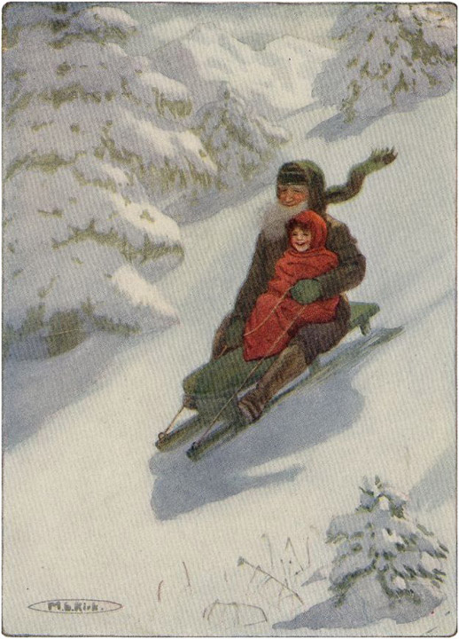

Keesokan paginya Peter datang lagi dengan kambing-kambingnya, dan Heidi pergi ke padang rumput bersama mereka. Hal ini terjadi hari demi hari, dan dalam kehidupan yang sehat ini Heidi semakin kuat, dan semakin terbakar sinar matahari setiap harinya. Tak lama kemudian musim gugur tiba dan ketika angin bertiup kencang melintasi lereng gunung, kakek akan berkata: "Kamu harus tinggal di rumah hari ini, Heidi; karena angin dapat menerbangkan makhluk kecil sepertimu ke lembah hanya dengan satu hembusan."
Peter selalu merasa tidak senang ketika Heidi tidak ikut, karena ia hanya melihat kesialan di hadapannya; ia hampir tidak tahu bagaimana menghabiskan waktunya, dan selain itu, ia kehilangan makan malamnya yang berlimpah. Kambing-kambing itu sudah sangat terbiasa dengan Heidi sehingga mereka tidak mengikuti Peter ketika Heidi tidak bersamanya.
Heidi sendiri tidak keberatan tinggal di rumah, karena ia sangat senang melihat kakeknya bekerja dengan gergaji dan palu. Terkadang kakeknya membuat keju bulat kecil pada hari-hari itu, dan tidak ada kesenangan yang lebih besar bagi Heidi selain melihatnya mengaduk mentega dengan tangan kosong. Ketika angin menderu kencang melalui pepohonan cemara pada hari-hari badai itu, Heidi akan berlari ke hutan kecil, merasa gembira dan bahagia oleh deru yang menakjubkan di dahan-dahan pohon. Matahari telah kehilangan kekuatannya, dan anak itu harus mengenakan sepatu, kaus kaki, dan gaun kecilnya.
Cuaca semakin dingin, dan ketika Peter bangun di pagi hari, ia meniupkan udara ke tangannya karena kedinginan. Akhirnya, Peter pun tak bisa datang lagi, karena salju tebal telah turun semalaman. Heidi berdiri di jendela, menyaksikan salju turun. Salju terus turun hingga mencapai jendela; namun tak berhenti, dan tak lama kemudian jendela-jendela tak bisa dibuka, dan semuanya tertutup rapat. Setelah beberapa hari, Heidi berpikir bahwa salju akan segera menutupi pondok itu. Akhirnya salju berhenti, dan kakek keluar untuk menyekop salju dari pintu dan jendela, menumpuknya tinggi di sana-sini. Sore harinya, keduanya duduk di dekat perapian ketika terdengar langkah kaki berisik di luar dan pintu didorong terbuka. Itu Peter, yang datang untuk menemui Heidi. Sambil bergumam, "Selamat malam," ia mendekati perapian. Wajahnya berseri-seri, dan Heidi tertawa ketika melihat air mata mengalir dari tubuhnya, karena semua es dan salju telah mencair dalam panas yang hebat.
Kakek kemudian bertanya kepada Peter bagaimana prestasinya di sekolah. Heidi sangat tertarik sehingga ia mengajukan seratus pertanyaan kepadanya. Peter yang malang, yang bukan orang yang mudah berbicara, merasa sangat kesulitan menjawab pertanyaan-pertanyaan gadis kecil itu, tetapi setidaknya hal itu memberinya waktu luang untuk mengeringkan pakaiannya.
Selama percakapan itu, mata kakek berbinar-binar, dan akhirnya dia berkata kepada bocah itu: "Sekarang setelah kau berada di bawah tembakan, jenderal, kau butuh penguatan. Mari bergabung dengan kami untuk makan malam."
Dengan begitu, lelaki tua itu menyiapkan makanan yang cukup untuk memuaskan selera makan Peter. Hari mulai gelap, dan Peter tahu sudah waktunya untuk pergi. Dia telah mengucapkan selamat tinggal dan terima kasih, lalu menoleh ke Heidi dan berkata:
"Aku akan datang Minggu depan, kalau boleh. Ngomong-ngomong, Heidi, nenek memintaku untuk menyampaikan bahwa dia sangat ingin bertemu denganmu."
Heidi langsung menyetujui ide ini, dan kata pertamanya keesokan paginya adalah: "Kakek, aku harus pergi menemui nenek. Dia sedang menungguku."
Empat hari kemudian matahari bersinar dan salju beku yang padat berderak di setiap langkah. Heidi sedang duduk di meja makan, memohon kepada lelaki tua itu untuk mengizinkannya berkunjung, lalu ketika lelaki itu bangkit, mengambil selimut tebalnya, dan menyuruhnya mengikutinya. Mereka keluar ke salju yang berkilauan; tidak terdengar suara apa pun dan pohon-pohon cemara yang tertutup salju bersinar dan berkilauan di bawah sinar matahari. Heidi dengan gembira berlarian ke sana kemari : "Kakek, keluarlah! Oh, lihat pohon-pohon itu! Semuanya tertutup salju perak dan emas," serunya kepada kakek, yang baru saja keluar dari bengkelnya dengan kereta luncur yang lebar. Membungkus anak itu dengan selimutnya, ia menaruhnya di atas kereta luncur, memegangnya erat-erat. Mereka mulai meluncur dengan kecepatan sedemikian rupa sehingga Heidi berteriak kegembiraan, karena ia tampak seperti terbang seperti burung. Kereta luncur berhenti di depan gubuk Peter, dan kakek berkata: "Masuklah. Saat hari gelap, mulailah perjalanan pulangmu." Setelah melepaskannya dari balutan, dia berbalik pulang dengan kereta luncurnya.

MEREKA MEMULAI DENGAN KECEPATAN YANG SANGAT TINGGI SEHINGGA HEIDI BERTERIAK KEGEMBIRAAN ToList
Setelah membuka pintu, Heidi mendapati dirinya berada di dapur kecil yang gelap, dan melewati pintu lain, ia memasuki ruangan sempit. Di dekat sebuah meja, seorang wanita duduk, sibuk memperbaiki mantel Peter, yang langsung dikenali Heidi. Seorang wanita tua bungkuk duduk di sudut, dan Heidi segera mendekatinya dan berkata: "Apa kabar, nenek? Aku sudah datang, dan kuharap aku tidak membuatmu menunggu terlalu lama!"
Sambil mengangkat kepalanya, nenek itu meraih tangan Heidi. Dengan penuh pertimbangan, ia meraba tangan Heidi dan berkata, "Apakah kamu gadis kecil yang tinggal bersama paman? Apakah namamu Heidi?"
"Ya," jawab Heidi. "Kakek baru saja membawaku turun dengan kereta luncur."
"Bagaimana mungkin? Tanganmu hangat sekali! Brigida, apakah pamannya benar-benar datang bersama anak itu?"
Brigida, ibu Peter, telah berdiri untuk melihat anaknya. Dia berkata: "Saya tidak tahu apakah dia melakukannya, tetapi saya rasa tidak. Dia mungkin tidak tahu."
Heidi, sambil mendongak, berkata dengan tegas: "Aku tahu kakek membungkusku dengan selimut saat kami meluncur bersama."
"Peter ternyata benar," kata nenek itu. "Kami tidak pernah menyangka anak itu akan hidup lebih dari tiga minggu bersamanya. Brigida, ceritakan padaku seperti apa rupanya."
"Dia memiliki anggota tubuh yang ramping seperti Adelheid dan mata hitam, serta rambut keriting seperti Tobias dan lelaki tua itu. Kurasa dia mirip dengan keduanya."
Saat para wanita itu berbincang, Heidi memperhatikan semuanya. Kemudian dia berkata: "Nenek, lihatlah daun jendela di sana. Itu menggantung longgar. Jika kakek ada di sini, dia akan mengencangkannya. Itu akan memecahkan kaca jendela! Lihatlah."
"Betapa manisnya kau," kata nenek dengan lembut. "Ibu bisa mendengarnya, tapi Ibu tidak bisa melihatnya, Nak. Rumah ini berderak dan berderit, dan ketika angin bertiup, angin masuk melalui setiap celah. Suatu hari nanti seluruh rumah akan hancur berkeping-keping dan menimpa kita. Seandainya Peter tahu cara memperbaikinya! Kita tidak punya orang lain."
"Kenapa, nenek, nenek tidak bisa melihat penutup jendela itu?" tanya Heidi.
"Nak, Ibu tidak bisa melihat apa pun," ratap wanita tua itu.
"Bisakah kamu melihatnya saat aku membuka rana untuk membiarkan cahaya masuk?"
"Tidak, tidak, bahkan saat itu pun tidak. Tak seorang pun bisa menunjukkan jalan keluar padaku lagi."
"Tapi kau bisa lihat saat keluar ke salju, di mana semuanya terang benderang. Ikut aku, nenek, aku akan menunjukkannya!" dan Heidi, sambil memegang tangan wanita tua itu, mencoba membawanya keluar. Heidi ketakutan dan semakin cemas sepanjang waktu.
"Biarkan aku tetap di sini, Nak. Semuanya gelap bagiku, dan mataku yang malang ini tak dapat melihat salju maupun cahaya."
"Tapi nenek, bukankah di musim panas hari menjadi terang, ketika matahari bersinar menerangi pegunungan untuk mengucapkan selamat malam, dan membuat semuanya tampak menyala?"
"Tidak, Nak, aku tidak akan pernah bisa melihat gunung berapi itu lagi. Aku harus hidup dalam kegelapan, selamanya."
Heidi tiba-tiba menangis tersedu-sedu. "Apakah tidak ada seorang pun yang bisa meringankan bebanmu? Apakah tidak ada seorang pun yang bisa melakukannya, nenek? Tidak ada seorang pun?"
Nenek itu mencoba segala cara untuk menghibur anak itu; hatinya hancur melihat kesedihan yang mendalam. Sangat sulit bagi Heidi untuk berhenti menangis setelah ia mulai menangis, karena ia jarang sekali menangis. Nenek itu berkata: "Heidi, izinkan aku mengatakan sesuatu kepadamu. Orang yang tidak dapat melihat senang mendengarkan kata-kata ramah. Duduklah di sampingku dan ceritakan semua tentang dirimu. Ceritakan padaku tentang kakekmu, karena sudah lama aku tidak mendengar kabar tentangnya. Dulu aku sangat mengenalnya."
Heidi tiba-tiba menyeka air matanya, karena ia mendapat ide yang menghibur. "Nenek, aku akan memberi tahu kakek tentang hal ini, dan aku yakin dia bisa meringankan bebanmu. Dia bisa memperbaiki rumah kecilmu dan menghentikan suara berderak itu."
Wanita tua itu tetap diam, dan Heidi, dengan penuh semangat, mulai menceritakan kehidupannya bersama kakeknya. Mendengarkan dengan saksama, kedua wanita itu kadang-kadang saling berkata: "Apakah kamu mendengar apa yang dia katakan tentang paman? Apakah kamu mendengarkan?"
Kisah Heidi tiba-tiba ter interrupted oleh suara ketukan keras di pintu; dan siapa yang masuk selain Peter. Begitu melihat Heidi, ia langsung tersenyum, membuka matanya yang bulat selebar mungkin. Heidi memanggil, "Selamat malam, Peter!"
"Benarkah sudah waktunya dia pulang!" seru nenek Peter. "Waktu berlalu begitu cepat. Selamat malam, Peter kecil; bagaimana bacaanmu?"
"Tetap sama," jawab anak laki-laki itu.
"Oh, sayangku, aku berharap akhirnya ada perubahan. Kamu hampir berumur dua belas tahun, Nak."
"Mengapa harus ada perubahan?" tanya Heidi dengan penuh minat.
"Aku khawatir dia tidak akan pernah mempelajarinya. Di rak di sana ada buku doa tua dengan lagu-lagu yang indah. Aku sudah melupakan semuanya, karena aku tidak mendengarnya lagi . Aku berharap Peter akan membacakan lagu-lagu itu untukku suatu hari nanti, tetapi dia tidak akan pernah bisa!"
Ibu Peter bangkit dari pekerjaannya sambil berkata, "Aku harus menyalakan lampu. Siang sudah berlalu dan sekarang sudah mulai gelap."
Ketika Heidi mendengar kata-kata itu, dia tersentak, dan sambil mengulurkan tangannya kepada semua orang, dia berkata: "Selamat malam. Aku harus pergi, karena sudah mulai gelap." Tetapi nenek yang cemas itu berseru: "Tunggu, Nak, jangan naik sendirian! Temani dia, Peter, dan jaga agar dia tidak jatuh. Jangan sampai dia kedinginan, dengar? Apakah Heidi punya selendang?"
"Aku belum kedinginan, tapi aku tidak akan kedinginan," balas Heidi, karena dia sudah keluar lewat pintu. Dia berlari begitu cepat sehingga Peter hampir tidak bisa mengikutinya. Wanita tua itu dengan cemas berseru: "Brigida, kejar dia. Ambil selendang hangat, dia akan membeku di malam yang dingin ini. Cepat!" Brigida menurut. Anak-anak itu hampir belum mendaki jauh ketika mereka melihat lelaki tua itu datang dan dengan beberapa langkah cepat dia berdiri di samping mereka.
"Aku senang kau menepati janjimu, Heidi," katanya; dan sambil membungkusnya dengan kain kafan, dia mulai mendaki bukit sambil menggendong anak itu. Brigida datang tepat waktu untuk melihatnya, dan menceritakan kepada neneknya apa yang telah disaksikannya.
"Syukurlah, syukurlah!" kata wanita tua itu. "Aku harap dia akan datang lagi; dia telah banyak berbuat baik padaku! Betapa lembut hatinya, sayangku, dan betapa pandainya dia berbicara." Sepanjang malam nenek itu berkata dalam hati, "Seandainya saja dia mengizinkannya datang lagi! Aku punya sesuatu untuk dinantikan di dunia ini sekarang, syukurlah!"
Heidi hampir tak sabar menunggu sampai mereka tiba di pondok. Ia mencoba berbicara di perjalanan, tetapi tidak ada suara yang terdengar karena selimut tebal. Begitu mereka masuk ke dalam pondok, ia mulai berkata: "Kakek, besok kita harus membawa beberapa paku dan palu; daun jendela di rumah nenek longgar dan banyak tempat lain bergetar. Semuanya berderak di rumahnya."
"Benarkah begitu? Siapa bilang kita harus?"
"Tidak ada yang memberitahuku, tapi aku tahu," jawab Heidi. "Semuanya longgar di rumah, dan nenekku bilang dia takut rumahnya akan roboh. Dan kakek, dia tidak bisa melihat cahaya. Bisakah kakek membantunya dan menyalakan lampu untuknya? Betapa mengerikannya takut dalam gelap dan tidak ada seorang pun di sana untuk membantumu! Oh, tolong, kakek, lakukan sesuatu untuk membantunya! Aku tahu kakek bisa."
Heidi berpegangan erat pada kakeknya dan menatapnya dengan mata penuh kepercayaan. Akhirnya kakeknya berkata sambil menunduk: " Baiklah, Nak, kita akan pastikan itu tidak berbunyi lagi. Kita bisa melakukannya besok."
Heidi sangat gembira mendengar kata-kata itu sehingga dia menari-nari di sekitar ruangan sambil berteriak: "Kita akan melakukannya besok! Kita bisa melakukannya besok!"
Sang kakek, menepati janjinya, membawa Heidi turun keesokan harinya dengan instruksi yang sama seperti sebelumnya. Setelah Heidi menghilang, ia berkeliling rumah memeriksanya.
Sang nenek, karena gembira melihat anaknya lagi, menghentikan roda pemintal dan berseru: "Anak itu datang lagi! Dia sudah datang lagi!" Heidi, sambil memegang tangan nenek yang terulur, duduk di bangku kecil di kaki wanita tua itu dan mulai mengobrol. Tiba-tiba terdengar suara benturan keras di luar; sang nenek karena ketakutan hampir menjatuhkan roda pemintal dan berteriak: "Ya Tuhan, akhirnya terjadi juga. Gubuk ini roboh!"
"Nenek, jangan takut," kata anak itu sambil memeluknya. "Kakek sedang memasang jendela dan memperbaiki semuanya untukmu."
"Mungkinkah? Apakah Tuhan tidak melupakan kita? Brigida, apakah kau mendengarnya? Pasti itu palu. Suruh dia datang sebentar lagi, jika memang dia, karena aku harus berterima kasih padanya."
Ketika Brigida keluar, ia mendapati lelaki tua itu sedang sibuk memasang balok baru di sepanjang dinding. Ia menghampirinya dan berkata: "Ibu dan aku mengucapkan selamat siang. Kami sangat berterima kasih atas bantuanmu, dan ibu ingin bertemu denganmu. Hanya sedikit orang yang mau melakukannya, paman, dan bagaimana kami bisa berterima kasih kepadamu?"
"Cukup," sela dia. "Aku tahu apa pendapatmu tentangku. Masuklah, karena aku bisa menemukan sendiri apa yang perlu diperbaiki."
Brigida menurut, karena pamannya punya cara yang tak seorang pun bisa lawan. Sepanjang sore pamannya memaku sana-sini; dia bahkan naik ke atap, tempat banyak barang hilang. Akhirnya dia harus berhenti, karena paku terakhir hilang dari sakunya. Sementara itu, hari sudah gelap, dan Heidi siap naik bersamanya, digendong erat dalam pelukannya.
Demikianlah musim dingin berlalu. Sinar matahari kembali menyinari kehidupan wanita buta itu, dan membuat hari-harinya tidak lagi gelap dan suram. Setiap pagi ia mulai mendengarkan langkah kaki Heidi, dan ketika pintu dibuka dan anak itu berlari masuk, nenek itu berseru dengan lebih gembira: "Syukurlah, dia telah datang lagi!"
Heidi akan bercerita tentang hidupnya, dan membuat neneknya tersenyum dan tertawa, dan dengan cara itu waktu berlalu begitu cepat. Dahulu, wanita tua itu selalu menghela napas: "Brigida, apakah hari belum berakhir?" tetapi sekarang dia selalu berseru setelah kepergian Heidi: "Betapa cepatnya sore berlalu. Bukankah begitu juga, Brigida?" Putrinya harus setuju, karena Heidi telah lama memenangkan hatinya. "Seandainya Tuhan tidak mengampuni anak itu!" neneknya sering berkata. "Semoga pamannya selalu baik hati, seperti sekarang."—"Apakah Heidi terlihat sehat, Brigida?" adalah pertanyaan yang sering diajukan, yang selalu mendapat jawaban yang meyakinkan.
Heidi juga sangat menyayangi neneknya yang sudah tua, dan ketika cuaca cerah, ia mengunjunginya setiap hari selama musim dingin itu. Setiap kali anak itu ingat bahwa neneknya buta, ia akan sangat sedih; satu-satunya penghiburan baginya adalah kedatangan neneknya membawa kebahagiaan. Kakek segera memperbaiki pondok itu; seringkali ia membawa banyak sekali kayu, yang ia gunakan dengan baik. Nenek bersumpah bahwa tidak akan terdengar suara berderak lagi, dan bahwa, berkat kebaikan pamannya, ia tidur lebih nyenyak selama musim dingin itu daripada yang pernah ia alami selama bertahun-tahun.